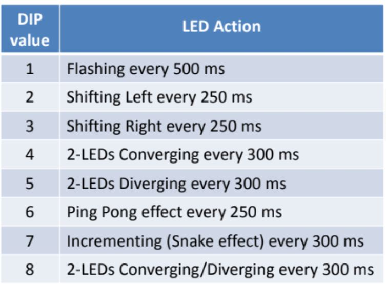

Write a C code that apply 8 different animations on 8 LED string
based on the value of 3-way DIP Switch as
following:

Arduino Code
int LEDs[8] = {2,3, 4, 5, 6, 7, 8, 9};
int DIPs[3] = {A0, A1, A2};
void flash()
{
for (int i = 0; i < 8; i++)
digitalWrite(LEDs[i], HIGH);
delay(500);
for (int i = 0; i < 8; i++)
digitalWrite(LEDs[i], LOW);
}
void shiftRight()
{
for (int i = 0; i < 8; i++)
{
digitalWrite(LEDs[i], HIGH);
delay(250);
digitalWrite(LEDs[i], LOW);
}
}
void shiftLeft()
{
for (int i = 8; i >= 0; i--)
{
digitalWrite(LEDs[i], HIGH);
delay(250);
digitalWrite(LEDs[i], LOW);
}
}
void ledsConverging()
{
for (int i = 0; i < 4; i++)
{
digitalWrite(LEDs[i], HIGH);
digitalWrite(LEDs[7 - i], HIGH);
delay(300);
digitalWrite(LEDs[i], LOW);
digitalWrite(LEDs[7 - i], LOW);
}
}
void ledsDiverging()
{
for (int i = 3; i >= 0; i--)
{
digitalWrite(LEDs[i], HIGH);
digitalWrite(LEDs[7 - i], HIGH);
delay(300);
digitalWrite(LEDs[i], LOW);
digitalWrite(LEDs[7 - i], LOW);
}
}
void pingPongEffect()
{
for (int i = 0; i < 8; i++)
{
digitalWrite(LEDs[i], HIGH);
delay(250);
digitalWrite(LEDs[i], LOW);
}
for (int i = 7; i >= 0; i--)
{
digitalWrite(LEDs[i], HIGH);
delay(250);
digitalWrite(LEDs[i], LOW);
}
}
void incrementingSnakeEffect()
{
for (int i = 0; i < 8; i++)
{
digitalWrite(LEDs[i], HIGH);
delay(250);
}
for (int i = 0; i < 8; i++)
{
digitalWrite(LEDs[i], LOW);
delay(250);
}
}
void ledsConvergeDiverge()
{
ledsConverging();
ledsDiverging();
}
void setup()
{
for (int i = 0; i < 8; i++)
pinMode(LEDs[i], OUTPUT);
for (int i = 0; i < 3; i++)
pinMode(DIPs[i], INPUT_PULLUP);
}
void loop()
{
// Combine the DIPs states into a single integer value
int DipValue = (digitalRead(DIPs[2]) << 2) + (digitalRead(DIPs[1]) << 1) + digitalRead(DIPs[0]);
// Call the corresponding LED animation function based on the DIP value
switch (DipValue) {
case 0:
flash();
break;
case 1:
shiftLeft();
break;
case 2:
shiftRight();
break;
case 3:
ledsConverging();
break;
case 4:
ledsDiverging();
break;
case 5:
pingPongEffect();
break;
case 6:
incrementingSnakeEffect();
break;
case 7:
ledsConvergeDiverge();
break;
default:
break;
}
// Add a delay to avoid rapid switching (adjust as needed)
delay(50);
}
Floating Pin
A floating pin, also known as a floating input or floating state, refers to a digital or analog pin on a
microcontroller or other electronic device that is not actively driven to a high or low voltage level by an
external source or by the microcontroller itself. Instead, it is left unconnected or not driven, allowing it
to "float" to a voltage level determined by various environmental factors such as nearby electrical noise,
electromagnetic interference, or capacitive coupling.
INPUT_PULLUP is a mode that is used to enable the internal
pull-up resistor of the microcontroller. When
INPUT_PULLUP is used, the pin is set to INPUT mode and the
internal pull-up resistor is enabled. This means
that the pin will be in a HIGH state when it is not connected to
anything. This is useful when you want to
connect a switch to a pin and you want to read the state of the
switch. When the switch is open, the pin
will
be in a HIGH state, and when the switch is closed, the pin will
be in a LOW state.
DIP Switch
A DIP switch is a manual electric switch that is packaged with others in a group in a standard dual in-line
package (DIP). The term may refer to each individual switch, or to the unit as a whole. This type of switch
is
designed to be used on a printed circuit board along with other electronic components and is commonly used
to
customize the behavior of an electronic device for specific situations.
LCD (Liquid Crystal Display)
LCD (Liquid Crystal Display) is a type of flat panel display which uses liquid crystals in its primary form
of
operation. LEDs have a large and varying set of use cases for consumers and businesses, as they can be
commonly
found in digital clocks, computer monitors, and instrument panels. LCDs allow displays to be much thinner
than
cathode ray tube technology. It is a low power consumption technology used in many applications such as
computer monitors, television, instrument panels, aircraft cockpit displays, and signage.